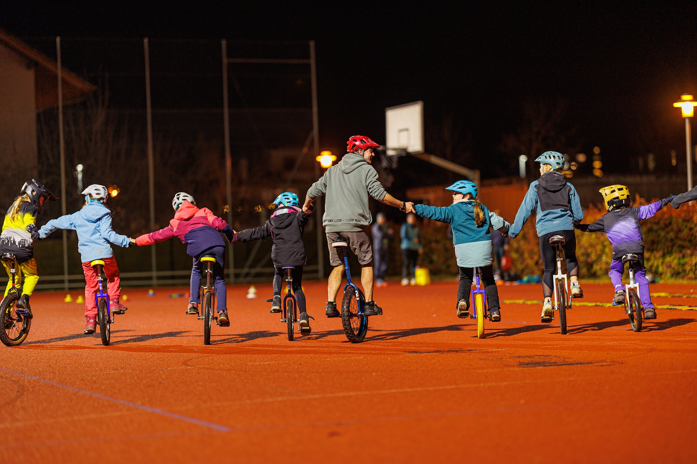

Unser Trainingsangebot:
Bringt einen Helm, ein Einrad und für euch passende Einradkleidung mit.
Offenes Training: |
|
|---|---|
| Montags von 17:00 bis 18:30 Uhr | |
| Gotthelfschulhausareal und Robinson Spielplatz | |
| Offen für alle | |
Ziele:
|
|

Fortgeschrittenes Training: |
|
|---|---|
| Mittwochs von 17:00 bis 18:30 Uhr | |
| Skatepark des Oberstufenschulhauses in Hünibach | |
| Für Einradfahrende die an den urbanen Disziplinen interessiert sind und selbständig fahren, aufsteigen und hüpfen können. | |
Ziele:
|
|

Munitage: |
|
|---|---|
| Ab und zu an einem Samstag oder Sonntag von ca. 10:00 bis 14:00 Uhr | |
| In den Wäldern rund um Thun, je nach Niveau der Teilnehmenden | |
| Für Einradfahrende die am Muni-Fahren interessiert sind. Es gibt jeweils eine Einsteiger- und eine Fortgeschrittenen-Gruppe. | |
Ziele:
|
|